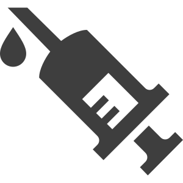
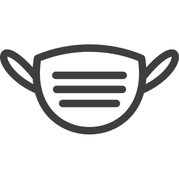
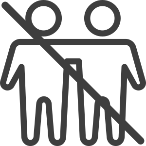
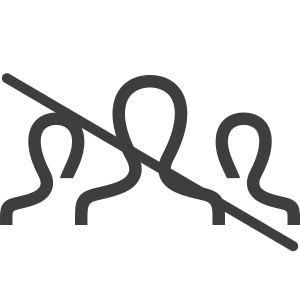
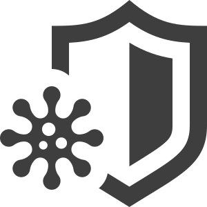
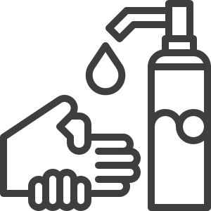
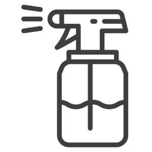
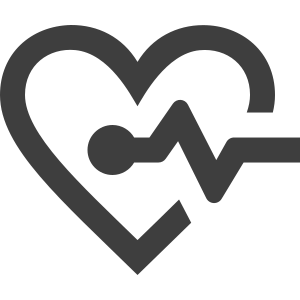
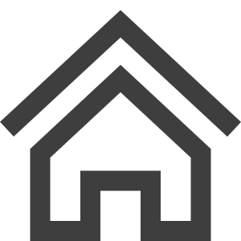
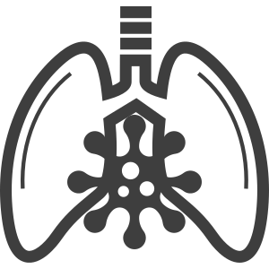

How to Protect Yourself & Others

Get Vaccinated and stay up to date on your COVID-19 vaccines
- COVID-19 vaccines are effective at preventing you from getting sick. COVID-19 vaccines are highly effective at preventing severe illness, hospitalizations, and death.
- Getting vaccinated is the best way to slow the spread of SARS-CoV-2, the virus that causes COVID-19.
- CDC recommends that everyone who is eligible stay up to date on their COVID-19 vaccines , including people with weakened immune systems.

Wear a mask
-
Everyone ages 2 years and older should properly wear a well-fitting mask indoors in public in
areas of substantial or high community transmission , regardless of vaccination status.
- You might choose to wear a mask regardless of the level of community transmission, if you or someone in your household is at increased risk for severe disease or has a weakened immune system, or if someone in your household is not up to date on their COVID-19 vaccines or not eligible to receive COVID-19 vaccines.
- Improve how well your mask protects you, and learn about how to choose a mask to protect yourself and others.
-
In general, people do not need to wear masks when outdoors. In areas of substantial or high transmission, people might choose to wear a mask outdoors when in sustained close contact with
other people, particularly if
- They or someone they live with has a weakened immune system or is at increased risk for severe disease.
- They are not up to date on COVID-19 vaccines or live with someone who is not up to date on COVID-19 vaccines.
-
People who have a condition or are taking medications that weaken their immune system may not be fully protected even if they are up to date on their COVID-19 vaccines. They should
continue to take all precautions recommended for unvaccinated people, including properly wearing a well-fitted mask, until advised otherwise by their healthcare provider.
- For more information, see COVID-19 Vaccines for Moderately or Severely Immunocompromised People
Wearing a mask over your nose and mouth is required on planes, buses, trains, and other forms of public transportation traveling into, within, or out of the United States and while indoors at U.S. transportation hubs such as airports and stations. Travelers are not required to wear a mask in outdoor areas of a conveyance (like on open deck areas of a ferry or the uncovered top deck of a bus).

Stay 6 feet away from others
- Inside your home: Avoid close contact with people who are sick, if possible. If possible, maintain 6 feet between the person who is sick and other household members. If you are taking care of someone who is sick, make sure you properly wear a well-fitting mask and follow other steps to protect yourself.
- Indoors in public: If you are not up to date on COVID-19 vaccines, stay at least 6 feet away from other people, especially if you are at higher risk of getting very sick with COVID-19.

Avoid poorly ventilated spaces and crowds
- If indoors, bring in fresh air by opening windows and doors, if possible.
- If you are at increased risk of getting very sick from COVID-19, avoid crowded places and indoor spaces that do not have fresh air from the outdoors.

Test to prevent spread to others
- You can choose from many different types of tests.
- Tests for SARS-CoV-2(the virus that causes COVID-19) tell you if you have an infection at the time of the test. This type of test is called a viral test because it looks for viral infection.
- Regardless of the test type you select, a positive test result means that you have an infection and should isolate and inform your close contacts to avoid spreading disease to others.
- Over-the-counter self-tests are viral tests that can be used at home or anywhere, are easy to use, and produce rapid results. Anyone can use self-tests, regardless of their vaccination status or whether they have symptoms.
- COVID-19 self-tests are one of many risk-reduction measures, along with vaccination, masking, and physical distancing, that protect you and others by reducing the chances of spreading COVID-19.

Wash your hands often
- Wash your hands often with soap and water for at least 20 seconds especially after you have been in a public place, or after blowing your nose, coughing, or sneezing.
-
It’s especially important to wash your hands:
- Before eating or preparing food
- Before touching your face
- After using the restroom
- After leaving a public place
- After blowing your nose, coughing, or sneezing
- After handling your mask
- After changing a diaper
- After caring for someone sick
- After touching animals or pets
- If soap and water are not readily available, use a hand sanitizer that contains at least 60% alcohol. Cover all surfaces of your hands and rub them together until they feel dry.
- Avoid touching your eyes, nose, and mouth with unwashed hands.
Cover coughs and sneezes
- If you are wearing a mask: You can cough or sneeze into your mask. Put on a new, clean mask as soon as possible and wash your hands.
-
If you are not wearing a mask:
- Always cover your mouth and nose with a tissue when you cough or sneeze, or use the inside of your elbow and do not spit.
- Throw used tissues in the trash.
- Immediately wash your hands with soap and water for at least 20 seconds. If soap and water are not readily available, clean your hands with a hand sanitizer that contains at least 60% alcohol.

Clean and disinfect
- Clean high touch surfaces regularly or as needed and after you have visitors in your home. This includes tables, doorknobs, light switches, countertops, handles, desks, phones, keyboards, toilets, faucets, and sinks.
-
If someone is sick or has tested positive for COVID-19, disinfect
frequently touched surfaces.
- Use a household disinfectant product from EPA’s List N: Disinfectants for Coronavirus (COVID-19) external icon according to manufacturer’s labeled directions.
- If surfaces are dirty, clean them using detergent or soap and water prior to disinfection.

Monitor your health daily
-
Be alert for symptoms:
- Watch for fever, cough, shortness of breath, or other symptoms of COVID-19.
- Take your temperature if symptoms develop.
- Don’t take your temperature within 30 minutes of exercising or after taking medications that could lower your temperature, like acetaminophen.
- Follow CDC guidance if symptoms develop.
- Monitoring symptoms is especially important if you are running errands, going into the office or workplace, and in settings where it may be difficult to keep a physical distance of 6 feet.

Follow recommendations for quarantine
- If you come into close contact with someone with COVID-19: follow CDC’s recommendations for quarantine.

Follow recommendations for isolation
- If you test positive for COVID-19 or have symptoms: follow CDC’s recommendations for isolation.